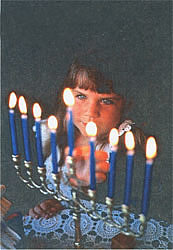
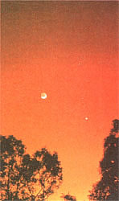

Many cultures have chosen to celebrate a holiday of cheer and lights when days are shortest, around the time of winter solstice. For the Jewish people, the holiday is Chanukah (sometimes spelled Hanukkah). The holiday commemorates an historical event - the rededication of the Temple in Jerusalem by the Maccabees after they defeated the Syrian division of what had been Alexander's empire in the year 165 B.C.E. (165 years before Christianity began).
Chanukah lasts for eight days, on each of which another candle is lit in the special candelabrum called a menorah. This ceremony is done in memory of the miracle said to have occurred at the time of the Temple's rededication: a single day's supply of lamp oil lasted for a full week. Some of the special holiday foods of Chanukah - such as the potato pancakes called latkes - are cooked in oil for the same reason.
Chanukah can be a time for the family to study the Torah. But it is also a time of gifts to children, which include gelt (money to encourage study) and the famous spinning game top called the dreidl. Even some of our readers who celebrate Chanukah may not know why the date of the holiday varies from year to year, occurring anywhere from late November to late December. The reason is that Chanukah begins on the 25th day of the Jewish lunar month Kislev. It is tied to the new moon nearest to the winter solstice, a moon whose date varies from one calendar year to the next.
In December 1998, we see Venus once again visible as the "Evening Star," Jupiter and Saturn visible most of the evening, a brightening Mars rising in the hour after midnight, and Mercury becoming unusually prominent at dawn. A few details about some of these sights - tend others, such as the Geminid meteor shower - can be found in our accompanying Almanac on page 74. But what greater wonders of the heavens are expected during the course of the year 1999?
Eclipses come in several varieties. Some are merely interesting, but others can be absolutely awesome. Representing the second category are total eclipses of the sun. The last total solar eclipse viewable in the U.S. occurred two decades ago and the next is not due here until almost two decades from now.
But on August 11, 1999, parts of England, France, Germany, eastern Europe, and the Middle East will be treated to a total solar eclipse (continental Europe's first since the early 1960s). For a few minutes, bright planets and stars will come out in the midst of the sudden daytime darkness (bathed in the unearthly eclipse half-light), and such staggering marvels as the gleaming solar corona and (briefly) the diamond-ring effect will become visible.
Here in the U.S. (and in Canada) we'll have to settle for two other much lesser eclipses in 1999. A large penumbral lunar eclipse will bring a slight shading to the moon for viewers in Hawaii on January 31. The western U.S. and Hawaii will also get a proper look at a partial eclipse of the moon before dawn on July 28.
When will be the best times to see the planets in 1999? Venus will be highest at dusk in midspring and at dawn in autumn. Mercury is best seen at dusk in late February and early March and at dawn in early August and late November. Mars keeps brightening and rising earlier in the night until it reaches its brightest for the year, and looks biggest in telescopes, around the time it is at "opposition" - that is, opposite the sun in the sky and therefore rising at sunset and visible all night long. The opposition of golden-orange Mars occurs on April 24 and is a fairly good one, slightly better than any has been for quite a few years.
The oppositions of Jupiter and Saturn take place only about two weeks apart, on October 23 and November 6, respectively. For months around that time, Jupiter will be the brightest point of light in the evening sky and Saturn will not only be bright but will also offer its finest ring-tilt in many years. Saturn will rise only about an hour after Jupiter as the two near each other for a rare conjunction, which occurs in the year 2000.
Conjunctions are meetings or gatherings of planets and other heavenly objects. There will be plenty of splendid ones in 1999. In February, the two brightest planets, Venus and Jupiter, pull steadily closer until they form a breathtakingly tight pair on February 23. On March 19, Venus climbs to have a close conjunction with Saturn - with crescent moon nearby! Many other fine conjunctions occur in the months that follow, but perhaps the finest is a very compact trio of the crescent moon, Venus, and the star Regulus in the west after sunset on July 15.
What about meteors and comets in 1999? No really bright comets are due to return, but we never know when a mighty new one like Hale-Bopp may show up. As for those displays of up to dozens of meteors per hour called "meteor showers," several of the best are not bothered by bright moonlight in 1999. The peak of the Perseid meteors around August 12 occurs with the moon being near new, and the plentiful Geminids of December 13 to 14 will be unbothered by moonlight in the second half of their big night in 1999.
The most spectacular astronomical event of 1999, visible over a large region of the world, may turn out to be a Leonid "meteor storm" on the night of November 17 to 18, 1999. There was a chance of such an event on November 17, 1998. There may be a greater chance on the big night in 1999. In some years such as 1799, 1833, and 1966, when the Earth passed particularly close to the funnel of debris following in the wake of the massive comet Tempel-Tuttle, there were Leonid meteor storms of up to 150,000 meteors per hour. The 33-year Tempel-Tuttle cycle may produce one of the most incredible sights you'll ever see.
You know it's Christmastime in Bangladesh when you see men cutting down hundreds of banana trees and replanting them outside their homes and along the paths to churches. Bamboo poles are suspended from arches made from the large tree leaves and small holes in the bamboo are filled with oil. When the oil is lit the pathway to church is visible to everyone in the community.
Ethiopians celebrate Christmas on January 6, according to the ancient calendar. Church bells ring at four in the morning as a call for early service. Later in the day, many children dress in their finest and go to the emperors palace to receive small gifts.
In Venezuela, Christmas celebrations take place over an entire week, and it is the custom in Caracas during the holidays to roller-skate to church. It's not uncommon to see busy streets closed to accommodate the flood of skaters. In an effort to not miss any of the fun, children often tie strings to their big toes and dangle the string out the window. If anyone sleeps late, friends will give a gentle tug and encourage them to join the fun.
Though Easter is the Christian holiday of primary importance in Greece, Christmas is still celebrated nationwide. Unlike other European and Western traditions, neither Christmas trees nor presents are a part of the holiday, but bands of carolers do wander the cities and towns and receive candies, almonds, and figs for their efforts. As in Ethiopia, mass begins at four in the morning and ends just before dawn. The tired parishioners then sit down to a family meal which includes Christpsomo, or the "bread of Christ," a cake decorated with both nuts and tiny cakes soaked in honey.
New Zealanders have been known to welcome "Father Christmas" at the beach, as Christ's birthday happens to fall in the heat of summer. Picnic lunches and dinners are a tradition.
In Japan, where St Nick is "Santa Kuroshu," Christmas is a twentieth-century phenomenon. This decidedly non-eastern holiday gradually infiltrated Japanese culture largely because of the Christmas products they manufactured for other countries. Christmas is not associated with any particular religion, however, but is observed as a general celebration of love for children. Decorated trees are quickly becoming the rage, and one of the most popular ornaments is an origami swan. Paper folded into this "bird of peace" and exchanged with other children is said to honor the Japanese pledge never to make war again. - M.S.
Almanac for December 1998 to January 1999
1 Mercury at inferior conjunction with sun (unviewable).
2Pioneer 11 spacecraft passed Jupiter this day in 1974.
3 FULL MOON, 10:19 A.M. EST.
4 Venus starts becoming visible as bright point of light very low in west-southwest about 20 minutes after sunset.
5 Variable star Mira should reach its peak brightness near Saturn in sky this month (see December issue of Sky & Telescope magazine for details).
7 Pearl Harbor Day; earliest sunset (4:35 P.M.) for 40° N latitude; on this date in 1972, night launch of Apollo 17, last manned mission to the moon (so far).
8 The term "blizzard" first used in Monthly Weather Review on this day in 1876.
9 The second major snowstorm in five days brought snow depths up to four feet in eastern Massachusetts on this day in 1786.
10 LAST QUARTER MOON, 12:53 P.M. EST; Wyoming Day; from about now until Christmas, Mercury rises in east-southeast 90 minutes or more before the sun (excellent viewing opportunity).
11 This day in 1932, San Francisco temperature ranged from 27°F to 35°F, with low of 20°F at the airport.
12 Before dawn, moon forms compact triangle with Mars and the star Gamma Virginis (use binoculars to see star); some Geminid meteors visible tonight (see entry for tomorrow).
18 St. Lucy's Day; peak numbers of Geminid meteors should be seen tonight, with little interference from light of late-rising moon; look for just possibly up to 60 or more of these shooting stars per hour on a very clear country night, zooming from east in evening, from high south in middle hours of night.
14 First day of Chanukah begins at previous day's sunset.
15 Mars within 1° of the star Gamma Virginis this morning and next.
16 Moon to upper right of Mercury in east-southeast at dawn; Mars at aphelion, point farthest from the in space.
17 Moon to lower left of Mercury, very low in the east-southeast at dawn.
18 NEW MOON, 5:42 P.M. EST; sun enters constellation Sagittarius.
19 Very thin moon to right of Venus, low in the southwest about 30 minutes after sunset; ancient Roman holiday Saturnalia.
20 Ramadan, Muslim month of fasting, begins at previous day's sunset; Mercury at greatest elongation from the sun, visible in east-southeast at dawn.
21 WINTER SOLSTICE, 8:56 P.M. EST, start of winter in the Northern Hemisphere; sun enters astrological sign Capricornus.
22 Ursid meteors might be seen shooting out of the north tonight.
24 Christmas Eve; moon to lower right of Jupiter this evening.
25 Christmas; moon to upper left of Jupiter this evening.
26 FIRST QUARTER MOON, 5:46 A.M. EST; Kwanzaa begins; Boxing Day (gifts in boxes) in Canada.
27 Moon near Saturn this morning.
30 Saturn resumes direct (eastward) motion relative to the background stars; binoculars show a star very near Mars tomorrow morning.
31 New Years Eve; Venus now sets more than an hour after the sun and is easily visible low in the southeast; this day in 1933, over seven inches of rain fell in Los Angeles.
1 New Years Day; FULL MOON, first of two this month, 9:50 P.M. EST
2 On this day 40 years ago, Luna 1 became the first space craftto leave Earth's gravity.
3 Quadrantid meteors shoot from northeast this morning or tomorrow morning.
4 Earth at aphelion (farthest from sun in space), but tilt of Northern Hemisphere away from sun makes for cold weather.
5 Venus near Neptune in sky but Neptune too dim in twilight; latest sunrise at 40° N latitude (7:22 A.M.).
8 For the following week, Mars and Spica are quite close together (rise near midnight, rather high in south at dawn).
9 LAST QUARTER MOON, 9:22 A.M. EST; moon near Mars tonight.
12 Mars and Spica closest together, only about 4° apart (that's less than half the width of your fist at arm's length).
13 Venus near Uranus but Uranus too dim in twilight.
17 NEW MOON, 3:47 P.M. EST; this day in 1982, Philadelphia had its lowest high temperature ever: 0°F.
18 Martin Luther King Day; moon near Venus tonight and tomorrow night.
19 Sun enters constellation Capricornus.
20 Sun enters astrological sign Aquarius; period of the January thaw begins, extends to January 26; at some time during the period, parts of at least the eastern U.S. often do experience significantly warmer weather.
21 Moon near Jupiter this evening.
23 Moon near Saturn this evening.
24 FIRST QUARTER MOON, 2:16 P.M. EST; this day in 1986, Voyager 2 became the first spacecraft (and so far the only) to fly by the planet Uranus.
27 Moon occults (hides) the star Regulus around 2 A.M. EST, as seen from most of the U.S.; Mercury near Neptune but both too close to the sun in the sky to see; on this day in 1967, the three Apollo 1 astronauts died in a launch pad fire during a test.
28 This day in 1986, the Space Shuttle Challenger exploded, killing seven astronauts.
31 FULL MOON, 11:07 A.M. EST; second full moon of the month (this is sometimes called a "blue moon," and on rare occasions the moon really does look blue); penumbral eclipse of the moon, but not visible in the U.S. except in Hawaii near dawn.
|
 Conjunction of the moon and, from top, Mars, Saturn, and Venus. |
 |
|